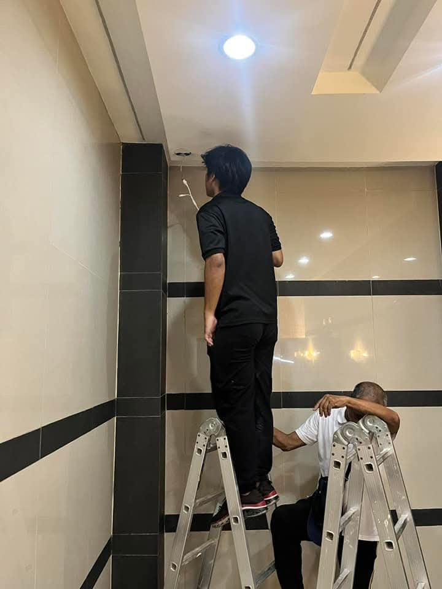
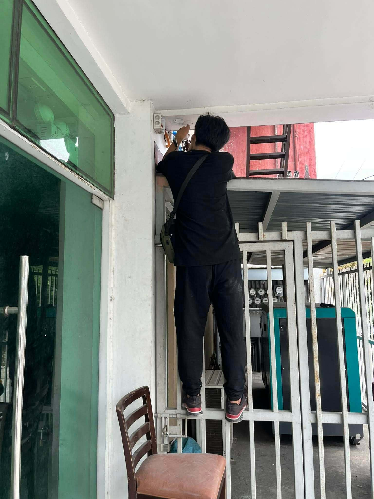

Technical Expertise
CCTV & Surveillance Design
Deploying standalone and enterprise network CCTV installations. Proficient in configuration setups for HVR, DVR, IP cameras, and storage architectures.
Network Administration
LAN routing, structural data cabling termination, TCP/IP network diagnostics, and hardware switch integrations for seamless connectivity.
Technical Support Operations
Advanced operating system troubleshooting, hardware diagnostics, data processing pipelines, and reliable client-side tech resolution mapping.
Field Deployments & Verified Proof

Structural Cabling
Ceiling Infrastructure Node Routing
Execution of high-elevation drop cabling and drop ceilings mountings for clean enterprise terminal structures.

Hardware Mounting
Perimeter Security Camera Deployment
Outdoor environment structural point mounting and heavy physical termination alongside industrial backup power grid lines.